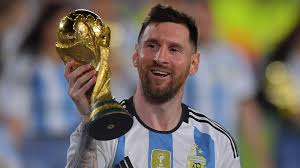
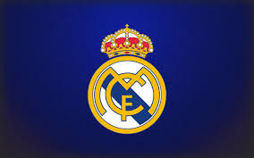

Champions League
The UEFA Champions League is one of the most prestigious tournaments in world football.
Champions League Trophy
Facts About the Champions League
- Founded: 1955
- Number of Teams: 32 (Group Stage)
- Most Titles: Real Madrid (14 titles)
- Current Champion: Manchester City (2023)
Top 5 Champions League Goal Scorers
 Cristiano Ronaldo – 140 goals
Cristiano Ronaldo – 140 goals-  Lionel Messi – 129 goals
- Robert Lewandowski – 91 goals
- Karim Benzema – 90 goals
- Raúl – 71 goals
Top 5 Champions League Assist Providers
- Cristiano Ronaldo – 42 assists
- Lionel Messi – 36 assists
- Ángel Di María – 35 assists
- Xavi – 30 assists
- Karim Benzema – 28 assists
Top 10 Clubs with Most Champions League Titles
-  Real Madrid – 14 titles
- AC Milan – 7 titles
- Liverpool – 6 titles
- Bayern Munich – 6 titles
 FC Barcelona – 5 titles
FC Barcelona – 5 titles- Ajax – 4 titles
- Inter Milan – 3 titles
 Manchester United – 3 titles
Manchester United – 3 titles- Nottingham Forest – 2 titles
- FC Porto – 2 titles